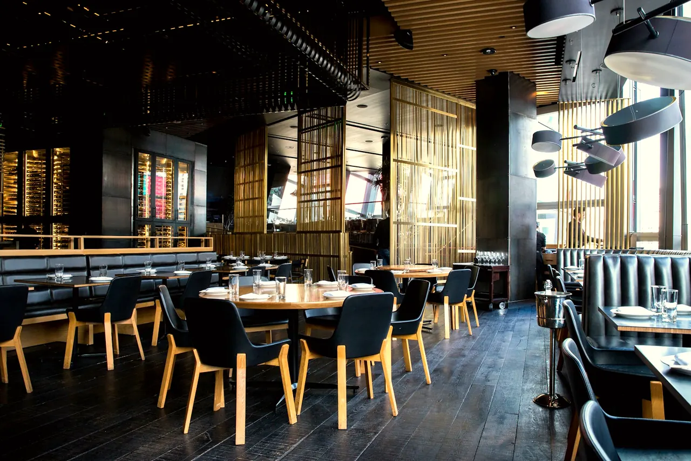
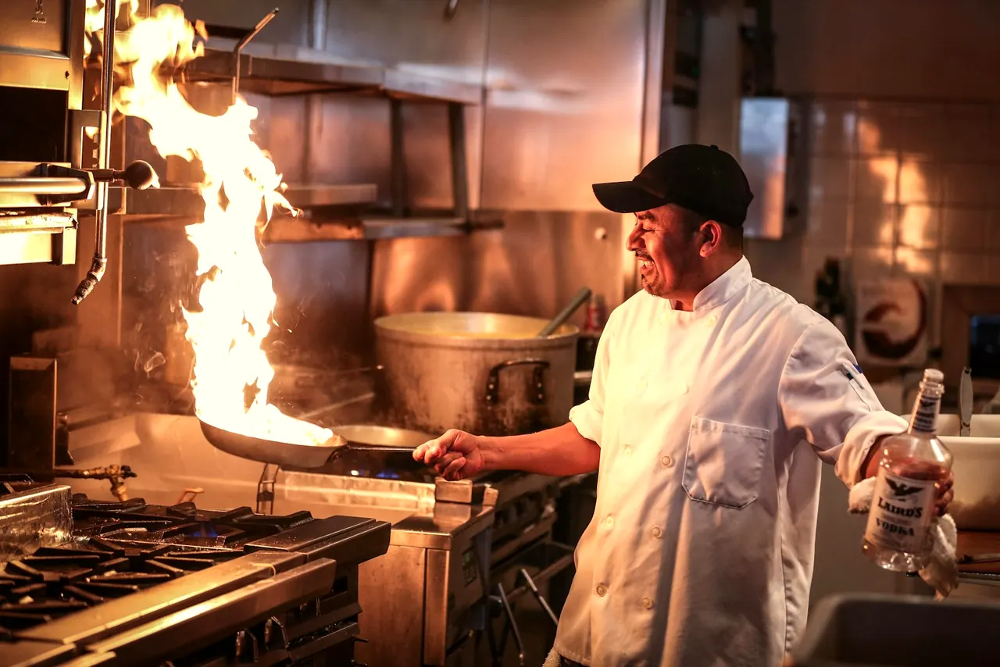
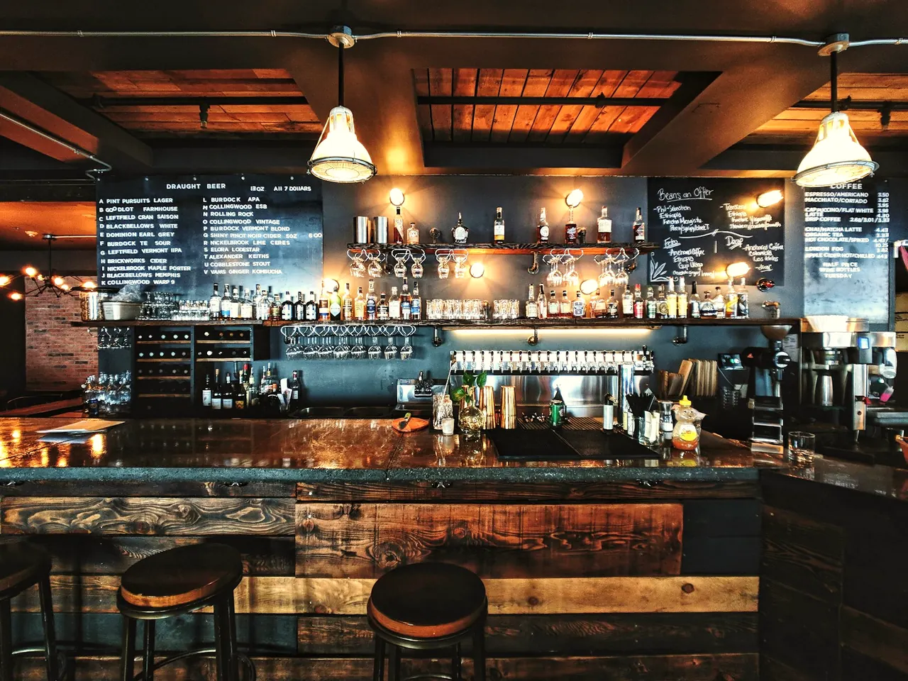
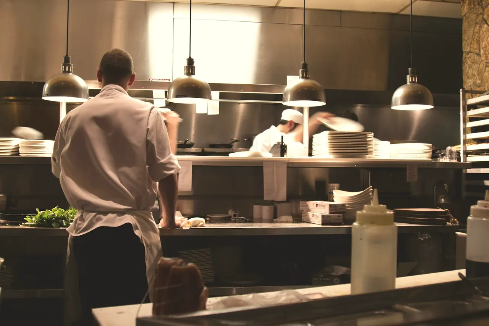
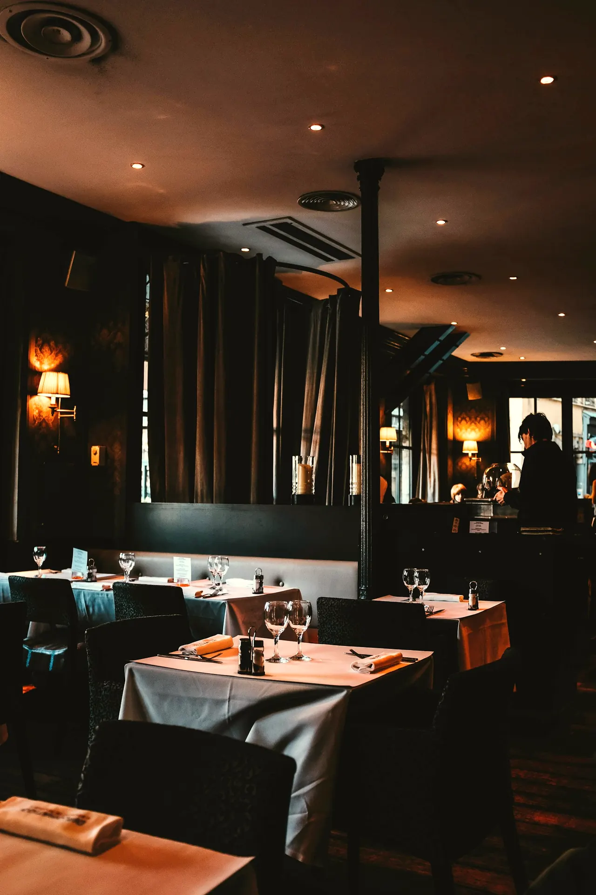

A casa · desde 1998
28 anos com o fogo aceso
Começou em 1998 numa garagem, com seis mesas e a churrasqueira de tijolo do Seu Antônio. Hoje ocupa um casarão de 1920 a duas quadras dali, e quem comanda a cozinha é a neta.

Da garagem ao casarão
- 1998
- A primeira brasaCom seis mesas, uma churrasqueira de tijolo e as receitas da avó, a Casa Brasa abre as portas na garagem da família.
- 2006
- O casarãoA fila na calçada pediu espaço. A família restaura um casarão de 1920 a duas quadras dali, nosso endereço até hoje.
- 2014
- Massas da casaChega a máquina de massa fresca e, com ela, o tagliatelle da Dona Lúcia vira o prato mais pedido de domingo.
- 2022
- Terceira geraçãoA neta Marina assume a cozinha, depois de anos em restaurantes da Itália, e renova o cardápio sem perder a raiz.

Quem cozinha
Cresci entre a churrasqueira do meu avô e a mesa de massa da minha avó. Cozinho com fogo, paciência e ingrediente comprado de quem planta perto.
Marina Ferraz · Chef e neta dos fundadores
O casarão por dentro



Horários
Aberto agora · fecha às 15h
- Segunda
- Fechado
- Terça
- 11:30 – 15:00 · 18:30 – 23:00
- Quarta
- 11:30 – 15:00 · 18:30 – 23:00
- Quinta (hoje)
- 11:30 – 15:00 · 18:30 – 23:00
- Sexta
- 11:30 – 15:00 · 18:30 – 00:00
- Sábado
- 11:30 – 00:00
- Domingo
- 11:30 – 17:00
- Estacionamento
- Convênio com o estacionamento ao lado
- Acessibilidade
- Rampa na entrada e banheiro adaptado
- Pet
- Pets são bem-vindos na varanda
- Wi-Fi
- Gratuito para clientes